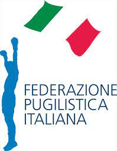

Il pugilato (o boxe) è lo sport da ring più conosciuto in occidente per la sua
lunga storia e per le tradizioni che affondano le proprie radici nella nostra
stessa cultura. I pugili si affrontano all’interno di un ring colpendosi con i pugni
chiusi e protetti da guantoni.
A differenza delle altre discipline da combattimento, la boxe è anche uno sport
olimpico ed è rigidamente regolamentata in Italia dalla FPI (Federazione
Pugilistica Italiana), unica federazione autorizzata dallo Stato a promuovere e
controllare questa specialità. Non è quindi possibile praticare il pugilato,
soprattutto se a livello agonistico, al di fuori di tale sigla.
A livello internazionale, tutta l’attività dilettantistica, è regolamentata
dall’ AIBA (Amateur International Boxing Association), unico organismo ufficiale
riconosciuto in tutto il mondo.
Per quanto riguarda invece l’ attività professionistica , il discorso è diverso in
quanto, a fianco delle due sigle più antiche e prestigiose, WBC (World Boxing
Council) e WBA (World Boxing Association), in tempi più recenti ne sono sorte
diverse altre, creando quindi un maggior numero di campioni e titoli (IBA, IBF,
IBO, WBO, WBU, ecc).